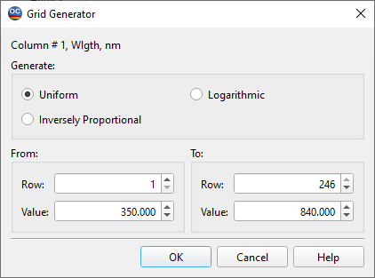

Grid Generator
The grid generator is another convenient tool for populating spreadsheet columns with data. It allows users to fill a column with a set of uniform, logarithmically increasing values, or inversely proportional values.

The Column field shows which column of the spreadsheet is being edited. You can specify the starting and ending rows to be filled in the From and To fields; by default, these fields are set to the currently selected rows in the spreadsheet (if any).
Specify the starting and ending values in the Value fields. After pressing OK, the specified rows in the selected column will be filled with values that increase or decrease uniformly or logarithmically, depending on your choice in the Generate field. If you select the Inversely Proportional mode, the grid will be uniform with respect to the inverse of the column’s parameter. For example, if your spectral parameter is wavelength, then the grid will be uniform in terms of wavenumbers, and vice versa.
Note: It is possible to specify a range of rows that exceeds the current number of rows available in the spreadsheet. In such cases, the spreadsheet will automatically expand to accommodate the specified range.
See also: Column Editor.